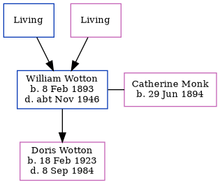

William Charles Wotton 1893 - c1946
[ Home ] | [ Calendar ] | [ Surnames Index ] | [ Errors ] | [ Family History ]A mail porter at the general post office and the child of Thomas Wotton and Mary Mount, William Wotton, the first cousin twice-removed on the mother's side of Nigel Horne, was born in Clapham, London, England on 8 Feb 18931,2,3,4,5 and had 1 child with Catherine Monk: Doris Edith.
During his life, he was living at his birthplace in 19011; and at 30 Bamford Avenue, Wembley, London, England on 29 Sept 19392.
He died c. Nov 1946 in Hendon, London, England4.
Parents
- Thomas
- Mary A
Children
- Doris Edith was born on 18 Feb 1923
Citations
- 1901 England Census Online publication - Provo, UT, USA: The Generations Network, Inc., 2005.Original data - Census Returns of England and Wales, 1901. Kew, Surrey, England: The National Archives of the UK (TNA): Public Record Office (PRO), 1901. Data imaged from the National (Relation to Head of House: Son)
- 1939 Register - Findmypast (was the head of the household)
- England & Wales births 1837-2006 - Findmypast
- England & Wales deaths 1837-2007 - Findmypast
- England & Wales, FreeBMD Birth Index, 1837-1915 Online publication - Provo, UT, USA: The Generations Network, Inc., 2006.Original data - General Register Office. England and Wales Civil Registration Indexes. London, England: General Register Office. © Crown copyright. Published by permission of the Cont
Media
England & Wales births 1837-2006 Transcription - BMD-B-1893-1-AZ-000659-090
England & Wales deaths 1837-2007 - BMD/D/1946/4/AZ/001085/008
1939 Register - TNA/R39/0949/0949C/017/16
Family Tree
Map
Generated by ged2site. Last updated on Jul 3, 2024
Known Issues
May have been living with mother on 1901, but the addresses don't match or aren't detailed enough to be sure
May have been living with father on 1901, but the addresses don't match or aren't detailed enough to be sure